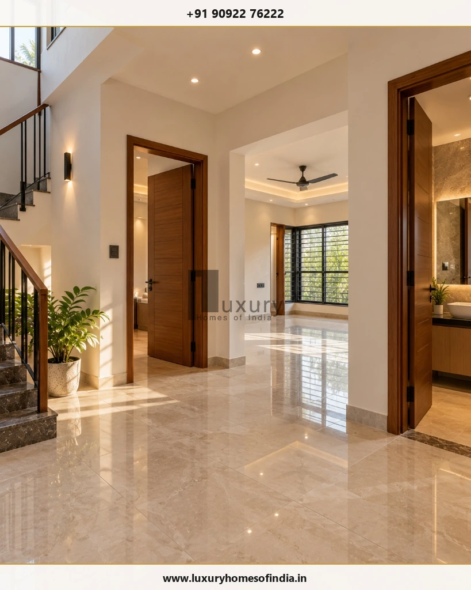
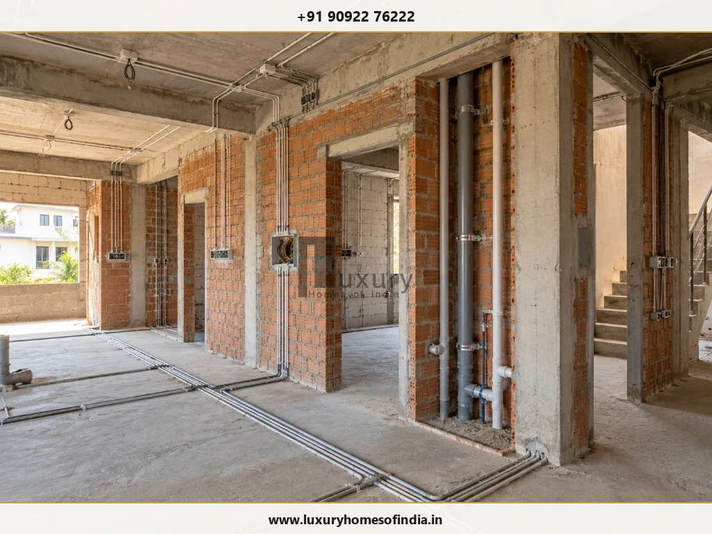

1. What Is a Duplex House?
A duplex house is commonly understood as a residence arranged over two connected levels, often a ground floor and first floor, linked by an internal staircase. Its layout may include bedrooms on both levels, living and dining areas, a kitchen, bathrooms, balconies, a family lounge, a study and utility spaces.
The term can also describe a building containing two separate residential units. That distinction matters because independent entrances, kitchens, services and access arrangements can change the design and execution requirements.
Before estimating construction time, clarify three things:
- Is the building a single-family G+1 home or two independent dwelling units?
- What is the total built-up area on each floor?
- Which architectural features and interior items are included in the construction contract?
These answers establish the scope against which a realistic schedule can be prepared.

2. How Many Months Does It Take to Build a Duplex House?
There is no single completion duration that applies to every duplex. For preliminary planning, the following ranges can be used as illustrative estimates requiring project-specific technical validation before they are relied on for budgeting or contractual commitments.
| Illustrative project category | Preliminary planning range |
|---|---|
| Compact, straightforward G+1 home | Around 8–10 months |
| Typical G+1 family duplex | Around 8–12 months |
| Larger home with premium finishes | Around 10–14 months or longer |
| Complex design or difficult site conditions | Establish a project-specific schedule |
These categories are not fixed industry standards. They are starting assumptions carried forward for planning discussion, not guaranteed construction durations or verified LHI project results.
A useful estimate must distinguish between:
- Planning-to-handover duration: Includes the defined pre-construction period, such as surveys, design and approvals.
- Construction duration: Starts from the agreed physical commencement or mobilisation date.
- Finishing and move-in duration: May include interior work, testing, defect correction and documentation beyond the main construction contract.
Always confirm which activities are included when comparing estimates from architects or contractors.
3. Stage-by-Stage Duplex Construction Timeline
A construction schedule should identify each activity, its expected duration, the work it depends on and the person responsible for completing it.
| Stage | Illustrative duration | Main activities |
|---|---|---|
| Requirements, site survey and soil investigation | 1–3 weeks | Site assessment, brief development and investigation |
| Architectural and structural design | 2–5 weeks | Plans, elevations, structural design and specifications |
| Required approvals | Several weeks or longer | Documentation, submission, review and permissions |
| Site preparation and foundation | 3–6 weeks | Setting out, excavation, foundation and plinth work |
| RCC structural work | 8–14 weeks | Columns, beams, slabs, staircase and associated work |
| Masonry and plastering | 5–8 weeks | Wall construction and surface preparation |
| Electrical and plumbing work | 3–5 weeks | Concealed services, pipework and first-fix installations |
| Flooring and finishing | 6–10 weeks | Tiles, paint, doors, windows, fittings and agreed finishes |
| Testing, rectification and handover | 1–3 weeks | Functional checks, snag correction and documentation |
The durations are planning examples, not a promise of completion. They should not be added mechanically because some tasks can overlap while others depend on prior work, inspections or curing periods. The qualified project team should establish the actual durations for the site and scope.
Why the sequence matters
A delay in one activity can affect several others. For example, an unresolved bathroom layout may delay plumbing coordination, waterproofing, tiling and fixture installation.
A schedule is more useful when it identifies not only when a task should happen but also what must be ready before it starts.
4. An Illustrative Month-by-Month Duplex Construction Plan
The following sequence demonstrates how work might be organised on a straightforward G+1 project. It is not a fixed programme, and the months may shift according to the approvals, scope and site.
Months 1–2: Requirements, design and approvals
Begin with the intended room arrangement, family needs, site constraints, approximate budget and finish specifications.
Typical activities include:
- Site survey and soil investigation
- Architectural planning and structural coordination
- Confirmation of staircase, bathroom and kitchen layouts
- Selection of major materials and systems
- Preparation of required submission documents
- Approval-related coordination
Resolve major design questions early. Construction must follow the applicable permission and technical requirements; an assumed schedule should not be used to bypass them.
Months 2–3: Site preparation and foundation
After the necessary permissions and technical preparations are in place, site execution can progress through setting out, excavation, foundation work and plinth construction.
Foundation requirements depend on the soil investigation, structural design and site conditions. Groundwater, difficult excavation or a specialised foundation system may alter the schedule.
Months 3–5: Structural construction
The structural phase establishes the principal frame of the duplex. Work may include columns, beams, slabs, the staircase and related structural elements.
The programme should account for the required formwork cycle, concrete work, curing, inspections and safe sequencing. Structural quality and specified curing requirements must not be compromised to achieve an arbitrary date.
Months 5–7: Masonry and concealed services
As suitable areas become available, wall construction and building services can proceed in a coordinated sequence.
Typical activities include masonry, electrical conduits, plumbing lines, frame preparation and plastering in completed areas.
Confirm service routes before they are concealed. Correcting an installation after plastering or tiling can cause avoidable rework.
Months 7–10: Flooring, painting and finishing
Finishing work can include flooring, bathroom tiles and fittings, painting, doors, windows, switches, lighting and agreed interior packages.
Custom wardrobes, kitchen cabinetry, specialist glazing and bespoke finishes may require separate procurement and installation allowances.
Months 10–12: Testing, rectification and handover
Reserve time for inspecting completed work, testing specified systems, correcting defects and assembling handover documentation.
The handover milestone should be defined in the contract. It should not automatically coincide with the completion of the last visible finishing activity.
5. What Factors Affect Duplex Construction Time in Chennai?
Built-up area and design complexity
A compact duplex with a straightforward structural layout may be easier to schedule than a home with double-height spaces, complex elevations, long spans or extensive custom detailing.
Soil and foundation requirements
Soil conditions, groundwater, excavation difficulty and the selected foundation system influence the work required before the main structure can progress.
Approval requirements
The permissions required depend on the plot, applicable regulations and characteristics of the proposed building. Confirm the relevant process and responsibilities before relying on a pre-construction duration.
Material availability
Tiles, doors, windows, stone, sanitaryware, electrical equipment and custom-made products may have different procurement lead times. Record selection and delivery dates for materials that affect critical activities.
Labour and trade coordination
Masonry, structural work, plumbing, electrical installations, tiling, painting and carpentry need to be coordinated. A completed area may remain unusable if the next trade is not ready to proceed.
Design changes
Changes to bathrooms, staircase dimensions, electrical points, windows or finishes can affect drawings, procurement, completed work and downstream activities. Evaluate the schedule implications before approving a change.
Weather and site access
Rain, waterlogging, restricted deliveries and inadequate material storage may affect productivity. Consider site-specific conditions rather than assuming that every month will produce the same output.
Interior scope
The time needed for a home with standard finishes can differ significantly from that required for extensive joinery, decorative ceilings, specialist lighting, automation and custom finishes.
6. Does a Duplex Take Longer Than a Single-Storey House?
A duplex often requires additional structural and coordination work compared with a single-storey home of otherwise similar scope. It may involve an upper slab, staircase, multiple levels of services and more complex sequencing.
However, the number of floors alone does not determine which project finishes first. Total built-up area, foundation requirements, layout, finish specifications and site conditions all matter.
For a meaningful comparison, compare homes with similar total built-up areas, structural complexity, interior scope and contractual inclusions. A larger single-storey home with elaborate detailing may take longer than a compact duplex.
7. How to Keep Duplex Construction on Schedule
Finalise the design before execution
Confirm the major layouts, staircase, kitchen, bathrooms, electrical points, windows and principal finishes. Document any later changes and assess their effect on time and cost.
Prepare a dependency-based programme
Break the project into stages and individual activities. Record target dates, prerequisites, inspection points, responsible parties and the evidence needed to mark each milestone complete.
Coordinate qualified professionals
Architectural, structural, electrical and plumbing requirements should be coordinated by appropriately qualified professionals. Resolve conflicts between drawings before they become site rework.
Plan procurement early
Identify long-lead products and approve specifications in time for ordering, delivery and inspection. Record who is responsible for purchasing each item.
Monitor progress weekly
Review planned versus actual progress. Document completed work, pending decisions, material availability, risks and corrective actions.
Allow time for quality checks
Include inspections, testing, defect correction and documentation in the programme. A schedule that omits these activities may show an attractive completion date without describing a complete handover.

8. Common Mistakes That Delay Duplex Construction
- Starting with unresolved drawings: Missing details can interrupt work and create rework.
- Underestimating approvals: Do not assume a fixed approval duration without checking the applicable process.
- Ordering materials too late: Special products may not arrive when needed.
- Changing scope without updating the programme: A small change may affect multiple downstream tasks.
- Concealing uninspected installations: Problems with plumbing, electrical work or waterproofing can be expensive to correct after finishes are installed.
- Setting a handover date without allowances: Reserve time for testing, defect correction and required documents.
- Failing to assign responsibilities: Every important decision, material order and inspection should have a clearly identified responsible party.
9. What Should a Duplex Construction Agreement Say About Time?
Before signing a construction agreement, confirm that it identifies:
- The agreed commencement date and how it is triggered
- The scope and target dates for each stage
- The expected completion and handover date
- Owner-supplied items and decision deadlines
- Approval responsibilities and dependencies
- Inspection and quality-control requirements
- The process for approving variations and recording their schedule effects
- How delays, access restrictions and other contractually recognised events are handled
- Progress reporting and milestone verification
- Handover documentation and defect rectification
The contract should define the relevant obligations and remedies rather than relying on a verbal promise that the project will finish by a particular month.
10. How to Prepare a Project-Specific Duplex Construction Timeline
Before committing to a completion date, prepare a brief that answers the following questions.
- What is the total built-up area on each floor?
- Are the architectural and structural drawings sufficiently developed?
- Which permissions are required, and what is their current status?
- What foundation conditions have been established?
- Which construction and interior activities are included in the contract?
- Who will purchase the major materials?
- Which selections or owner decisions could delay procurement?
- What inspections, testing and handover documents are required?
- How will progress, delays and changes be recorded?
Use the answers to create a stage-wise programme with dependencies and milestone dates. Review it as the project develops instead of treating the first estimate as an unchangeable promise.
11. Discuss Your Duplex Project with Luxury Homes of India
If you are planning a duplex in Chennai, begin by defining the plot constraints, intended layout, built-up area, required finishes and construction scope. These details help the project team identify the information needed to prepare a realistic schedule.
Luxury Homes of India can be approached through its website and contact page to discuss your requirements, subject to confirmation of the company's current service scope and availability.
- Website: https://www.luxuryhomesofindia.in/
- Contact: https://www.luxuryhomesofindia.in/contact
The actual project duration should be established only after reviewing the site, design, applicable permissions, specifications, resources and agreed contract.
Frequently Asked Questions
Conclusion
Building a duplex house in Chennai requires coordinated planning across design, approvals, structural construction, services, finishes and handover. A preliminary duration is useful only when its starting point, assumptions and included activities are clearly defined.
The best way to manage the schedule is to prepare a project-specific programme, resolve design decisions early, plan material procurement, coordinate each trade and reserve time for inspection and rectification.
Planning a duplex house in Chennai? Discuss your requirements with Luxury Homes of India and establish the information needed for a project-specific construction schedule.